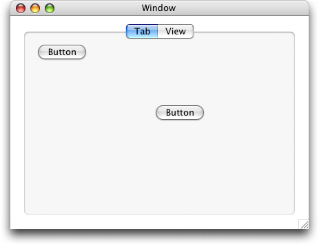

Q: In Interface Builder on Mac OS X 10.3, I create a Carbon Tab control in a compositing window and embed a button in the first pane. Although I specify the correct layout bindings for both controls, when I resize the window only the Tab control adjusts its size but the button doesn't move. What's going on and what can I do to fix this?A: When you create a Carbon Tab control in Interface Builder, a User Pane control is automatically created, for your convenience, for each tab pane. When you create and embed a control in a tab pane (see Figure 1), it is actually embedded in the User Pane control (see the dump information in Listing 1). Figure 1: Unresized Window. Listing 1: Control Hierarchy.
Dumping info for window 0x1146DF0
Window found. Dumping views...
Control 0x1104ce0 <appl/cnvw> ( "" ), ID 'wind'/1, (22,0,382,480), Embedder, Vis, Act, Ena, ...
Control 0x1145dd0 <appl/tabs> ( "" ), ID ''/0, (5,20,340,460), Embedder, Vis, Act, Ena, ...
Control 0x114f260 <appl/upan> ( "" ), ID ''/0, (37,0,335,440), Embedder, Vis, Act, Ena, ...
Control 0x114e340 <appl/upan> ( "" ), ID ''/0, (37,0,335,440), Embedder, Vis, Act, Ena, ...
Control 0x114e2e0 <appl/push> ( "Button" ), ID 'bttn'/100, (258,350,278,420), Vis, Act, Ena, ...
You can specify the layout bindings (see Figure 2) for the Tab control and for the button, but, even though you can select each tab pane and change, for example, its label, you cannot modify its layout settings (see Figure 3) and thus, when the window is resized, the Tab control adjusts itself correctly, but the User Pane does not and so the button does not either (see Figure 4). Figure 2: Interface Builder Layout Setting. Figure 3: No Layout Setting Available. Figure 4: Incorrect Resized Window.  The simplest and best solution is to go back, in Interface Builder, to the Instances pane of the main window and select the list view instead of the icon view (see Figure 5), and there you can select the tab pane and change its layout in the inspector (see Figure 6). Figure 5: Instances in List View mode. Figure 6: Layout Setting Now Available for a Tab Pane. You can now change the layout settings (in this case, choosing the same settings as in Figure 2) and now the button at the bottom left will correcly bind to its parent after a resize (see Figure 7). Figure 7: Correct Resized Window. Of course, to be complete, these layout bindings should be applied to all the tab panes. Document Revision History| Date | Notes |
|---|
| 2004-10-14 | Describes the Tab control hierarchy and layouts of its panes and provides a fix to a common problem. |
Posted: 2004-10-14
|